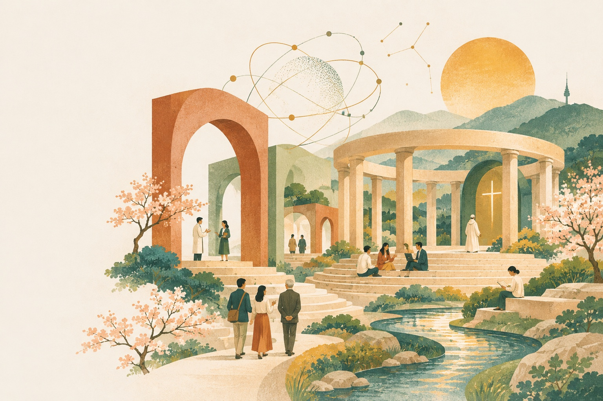

Stanton E. F. Wortham
Boston College
2027 WYD-Sogang International Conference
A dialogue across humanism, science and religion on the future we shape with AI.

A place for shared inquiry · Original illustrationThe conference
Artificial intelligence is changing how we learn, work, discover and understand ourselves. Its possibilities invite hope. Its risks call for careful thought.
The 2027 WYD-Sogang International Conference brings these questions into a shared conversation. Hosted at Sogang University in Seoul, the conference explores AI and human flourishing through humanism, science and religion.
We invite scholars from across disciplines to examine the benefits and risks of AI, and to consider how its development can serve human life.
Three perspectives. A shared inquiry.
Governance, democracy, work, development and education in the age of AI.
Healthcare, sustainability, intelligent systems and scientific discovery.
Personhood, spiritual direction, Catholic education and social teaching.
Thinking beyond these fields? Open-track and interdisciplinary proposals are also welcome.
Voices in the conversation
Boston College
Sogang University
University of Oxford
Listed in the Call for Papers draft. Participation, talk titles and session times are TBU.
Plan your participation
Join us in Seoul in August 2027. Submission and registration milestones will be announced here.
TBU = To be updated. Deadline times and time zone: TBU
An invitation to contribute
We welcome 300-word proposals exploring AI through humanism, science, religion and beyond.